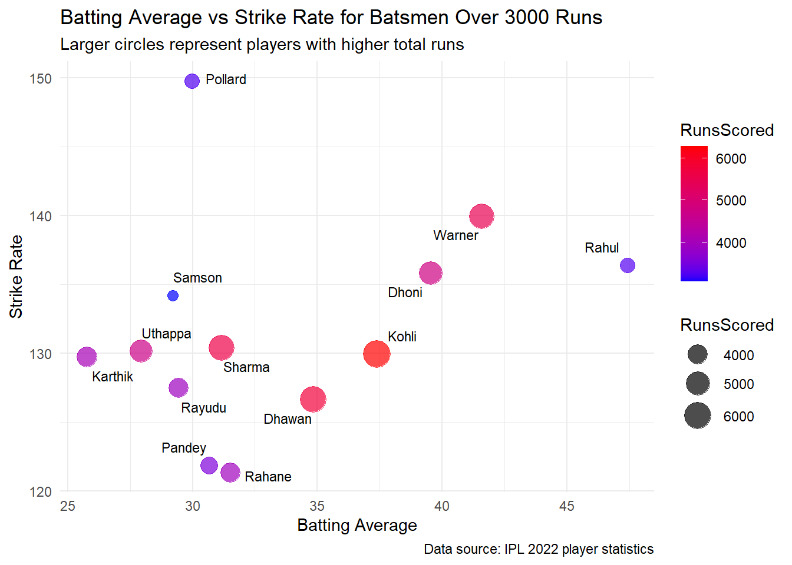

Problem Description
In the high-stakes environment of the Indian Premier League (IPL), selecting the right players during the auction can determine a team’s success. While traditional performance metrics like batting and bowling averages provide insight into a player’s consistency, they do not fully capture the fast-paced nature of T20 cricket. To optimize auction strategies, IPL teams must prioritize alternative metrics, such as strike rate for batsmen and economy rate for bowlers, to identify players who can make a game-changing impact.
Data Description
The data for this analysis was sourced from the IPL 2022 player statistics dataset available on Kaggle. This dataset includes player performance metrics such as runs scored, wickets taken, strike rates, economy rates, and averages accumulated over multiple IPL seasons. Key variables analyzed include:
Batting Average: The average number of runs scored per innings.
Strike Rate: The number of runs scored per 100 balls faced.
Bowling Average: The number of runs conceded per wicket.
Economy Rate: The average number of runs conceded per over.
Before diving into the analysis, the data was cleaned by ensuring all players had complete records of these key metrics. Players with over 3000 runs (for batsmen) or more than 90 wickets (for bowlers) were included for a deeper analysis, allowing for a more accurate evaluation of top performers.
Analysis
The analysis highlights two key performance areas: batting and bowling.
Batting Performance for Auction Strategy
The scatter plot below Figure 1 showcases the relationship between a player’s batting average and strike rate for players with over 3000 runs.
| Top Performing Batsmen | |||
| Batsman | Batting Average | Strike Rate | Runs |
|---|---|---|---|
| David Warner | 41.59 | 139.6 | 6000+ |
| KL Rahul | 47.43 | 136.7 | 5000+ |
| Kieron Pollard | 29.90 | 149.7 | 3000+ |
The larger the bubble, the more total runs a player has scored. This visualization shows that:
High Strike Rate, High Batting Average: Players like David Warner and KL Rahul stand out for their ability to combine a high strike rate with a solid batting average, making them ideal auction picks.
High Strike Rate, Moderate Batting Average: Players like Kieron Pollard may not have the highest averages, but their explosive strike rates make them valuable, especially in death overs.
Low Strike Rate, High Batting Average: Players such as Ajinkya Rahane and Manish Pandey, despite respectable averages, have lower strike rates, which may limit their ability to contribute to fast-paced T20 matches.
Bowling Performance for Auction Strategy
Similarly, bowling performance was analyzed based on the relationship between economy rate and bowling average for bowlers with over 90 wickets, shown in Figure 2.
| Top Performing Bowlers | |||
| Bowler | Bowling Average | Economy Rate | Wickets |
|---|---|---|---|
| Rashid Khan | 20.85 | 6.55 | 150+ |
| Jasprit Bumrah | 24.55 | 7.39 | 130+ |
| Dwayne Bravo | 24.81 | 8.39 | 150+ |
Key insights include:
Low Economy Rate, Low Bowling Average: Bowlers like Rashid Khan and Jasprit Bumrah are optimal choices due to their ability to restrict runs while taking wickets consistently.
High Economy Rate, Low Bowling Average: Dwayne Bravo’s higher economy rate is balanced by his ability to take crucial wickets, particularly in death overs.
Conclusion
This analysis demonstrates that IPL teams can optimize their auction strategies by prioritizing strike rates and economy rates over traditional averages. Players like David Warner and KL Rahul exemplify the balance between consistency and impact, making them top picks. On the bowling side, Rashid Khan and Jasprit Bumrah are standout performers, thanks to their ability to control the game’s pace with low economy rates and frequent wickets.
By focusing on metrics that reflect the fast-paced nature of T20 cricket, teams can make informed decisions, selecting players who are not only consistent but capable of turning the tide in crucial moments. This approach aligns with insights from analysts like Harsha Bhogle, who emphasized the importance of strike rates in T20 cricket.
Academic Reference
Bhogle, H. (2019, April 8). Strike-Rate Is More Important than Average in T20 Format. The Times of India. Retrieved from https://timesofindia.indiatimes.com